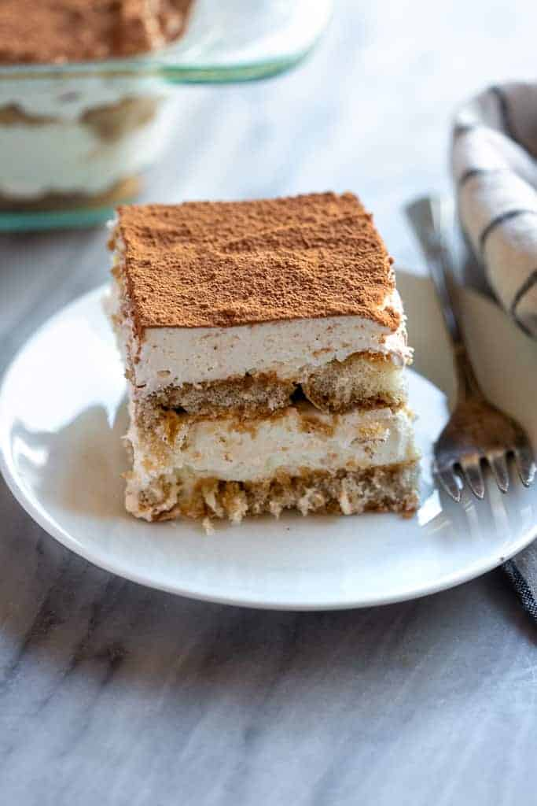

Tiramisu

Description
Tiramisu is an Italian dessert made of ladyfinger pastries (savoiardi) dipped in coffee, layered with a whipped mixture of cream, sugar, and mascarpone, and topped with cocoa powder. The recipe has been adapted into many varieties of cakes and other desserts.
Ingredients
- One pack of savoiardi
- 400ml mascarpone
- 300ml heavy cream
- Powder sugar
- Vanilla extract
- Cocoa powder
- 600ml cool esspresso coffee
- 1oz Ammaretto liquer
Steps
- Whip cream to stiff peaks.
- Fold in mascarpone and vanilla extract.
- Sweeten mixture with powdered sugar to taste. Set aside.
- Combine coffee and Ammaretto in a bowl.
- Dip savoiardi in coffee mixture one at a time and layer flat in serving dish. Conitnue until there is one flat, complete layer in dish.
- Add a smooth layer of mascarpone/whipped cream mixture on top of savoiardi.
- Add another layer of savoiardi and mascarpone/whipped cream mixture on top.
- Dust top with cocoa powder.
Home